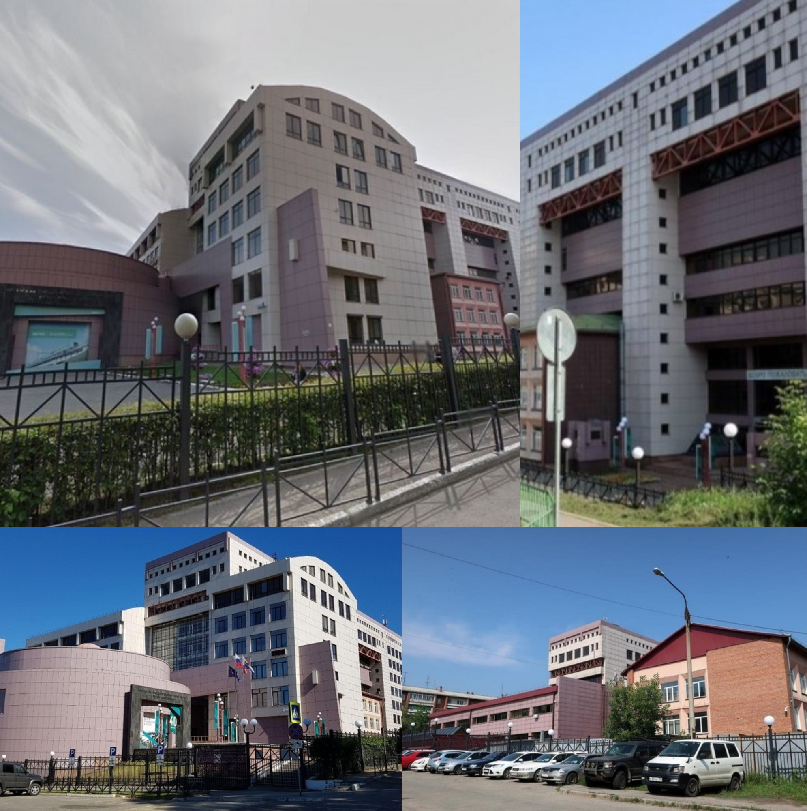

Начало XX столетия
В июне 1931 г. Центральный Комитет партии на очередном заседании рассмотрел вопросы по развитию железных дорог Сибири. Следом Восточно-Сибирский партийный крайком, опираясь на решения ЦК, принял свои постановления по данному вопросу. В одном из пунктов итоговой резолюции члены крайкома единогласно утвердили решение об открытии в Иркутске транспортного вуза.
13 октября 1932 года вышел приказ НКПС «О строительстве Восточно-Сибирского института инженеров железнодорожного транспорта», который закрепил начинания в становлении вуза в Иркутске.
3 марта 1934 г. вышел приказ Народного комиссара путей сообщения А.А. Андреева № 42/Ц «О разукрупнении Томской и Забайкалькой железных дорог и образовании Восточно-Сибирской железной дороги». Таким образом, для Восточно-Сибирского института инженеров железнодорожного транспорта все складывалось более чем благоприятно. Однако 8 апреля 1934 г. вышел приказ Наркома № 87/Ц «Об объединении Иркутского и Новосибирского институтов инженеров транспорта и о мероприятиях по укреплению работы ТомИИТа и НИИТа».
Но упование на подготовку инженерно-технических кадров транспортными вузами Западной Сибири и европейской части страны в нужной мере себя никак не оправдало, лишь четверть из них оставались работать на местах по распределению. Поэтому открытие в Иркутске спустя 21 год учебно-консультационного пункта ВЗИИТа было закономерным и стало началом возрождения в Иркутске полноценного и самостоятельного железнодорожного института, так необходимого ВСЖД.
14 января 1955 года вышел приказ министра высшего образования за номером 28 об открытии с 1 апреля в городе Иркутске учебно-консультационного пункта Всесоюзного заочного института инженеров железнодорожного транспорта.
27 июля ГУУЗ МПС издает приказ о переподчинении Иркутского УКП с 1 сентября 1956 года Хабаровскому институту железнодорожного транспорта, в стенах которого как раз образовался заочный факультет.
За первую советскую семилетку с 1958 по 1965 года Иркутский УКП, а затем филиал подготовил 583 специалиста высшей квалификации, из них защитили дипломные проекты на «отлично» 264 человека и на «хорошо» — 259. Многие рядовые работники, получив образование в филиале, заняли руководящие должности.
3 декабря 1965 г. ректор НИИЖТа Николай Павлович Кондаков подписывает приказ за номером 1174 о переводе Абаканского, Красноярского и Улан-Удэнского УКП в прямое подчинение Иркутскому филиалу. Это превращало Иркутский филиал в центр обучения, охватывающий почти все станции ВСЖД. С этого момента начал зарождаться мощный учебный комплекс железнодорожного транспорта в Восточной Сибири.
Второе рождение ИрГУПС — 1975 год
С возрождением строительства Байкало-Амурской магистрали в 1974 году дефицит квалифицированных кадров стал настолько болезненным, что окончательно вернул на повестку дня вопрос быть или не быть в Иркутске полноценному профильному вузу, и 18 июля 1975 г. приказом № 1534 Министерство путей сообщения открывает Иркутский институт инженеров железнодорожного транспорта (ИрИИТ). Первым ректором института стал доцент Поздеев Владимир Николаевич, до этого работавший директором филиала НИИЖТа.
В 1980 году ректором ИрИИТа назначен доктор технических наук, профессор Гура Георгий Степанович. По данным на 1981 года в институте обучалось более 4 тысяч студентов на трех отделениях: дневном, вечернем и заочном. Профессорско-преподавательский состав состоял из 127 человек, в том числе 27 из них имели научные степени и звания. В 1982 году ректором был утвержден кандидат технических наук, доцент Рыжиков Владимир Георгиевич. В этом же году было построено новое здание института на улице Чернышевского.
Несмотря на многие объективные трудности, вуз начал активно развиваться и уже через 10 лет в нем обучалось более 5000 студентов, работало 18 кафедр на 4 факультетах, имелось 5 УКП.
Первым избранным ректором вуза стал Леонид Петрович Сурков. Выборы состоялись в 1987 году. Вуз продолжал развиваться, появлялись все новые кафедры. К началу 90-годов коллектив уже имел Государственную премию за большую научно-исследовательскую работу.
К началу 2000 годов завершилось строительство первой очереди блоков учебного корпуса общей площадью 13,6 тысячи квадратных метров и нового общежития.
Трансформация в университетский комплекс
В 2002 году ректором ИрГУПС стал доктор технических наук, профессор Андрей Павлович Хоменко.
В апреле 2002 года указом МПС России Иркутский институт инженеров железнодорожного транспорта переименован в ведение ИрГУПС передали Красноярский филиал и Забайкальский институт железнодорожного транспорта.
В 2005 году по решению Правительства Российской Федерации ИрГУПС преобразован в отраслевой университетский образовательный комплекс, в который к уже имеющимся УКП в городе Улан-Батор, Красноярскому и Забайкальскому институтам, Северобайкальскому, Братскому, Абаканскому филиалам входят Улан-Удэнский колледж железнодорожного транспорта, а также Читинский и Красноярский техникумы железнодорожного транспорта. Это правительственное решение создало условия и возможности для реализации крупных образовательных программ и проектов разных уровней, позволило повысить эффективность использования интеллектуальных, материальных, финансовых, информационных и других ресурсов. Оно позволило не только успешно выполнять кадровые обязательства перед отраслью, но и сделало Университет опорным вузом, способным реализовать многие аспекты стратегии Министерства транспорта по транспортному развитию Востока России.
Следующие 16 лет вуз уже наращивает внутренние резервы, за это время сформировалась единая система подготовки в рамках двух уровней образования — среднее профессиональное и высшее. Качество подготовки специалистов в иркутском вузе подтверждается впервые опубликованными в 2015 году данными Минобрнауки РФ о трудоустройстве выпускников вузов РФ. Иркутский государственный университет путей сообщения вошел в десятку вузов Сибирского федерального округа, чьи выпускники наиболее востребованы на рынке труда.
20 сентября 2022 года на должность ректора Иркутского государственного университета путей сообщения был назначен Юрий Трофимов. С апреля 2021 по июнь 2022 года Юрий Анатольевич работал в должности первого проректора ИрГУПС.
Университет сегодня
Сегодня ИрГУПС — современный образовательный комплекс на Востоке России. Новые вызовы, стоящие как перед транспортной отраслью, так и перед образовательным сообществом, требуют от университетов стать локомотивами развития. Внимание работодателей объективно концентрируется на качестве подготовки специалистов в отраслевых вузах Востока России и соответствии компетенций выпускников возникающим новым требованиям модернизируемого производственного процесса. Как и проект «БАМ» четыре десятилетия назад, Восточный полигон становится ключевым для государства по перевозке грузов в страны АТР через Восточную территорию России, а Иркутский государственный университет путей сообщения — форпостом транспортного образования на Востоке. Его структура охватывает четыре субъекта РФ, не считая зарубежного филиала.
Где нас найти
Мы находимся по адресу Чернышевского, 15
Галерея
